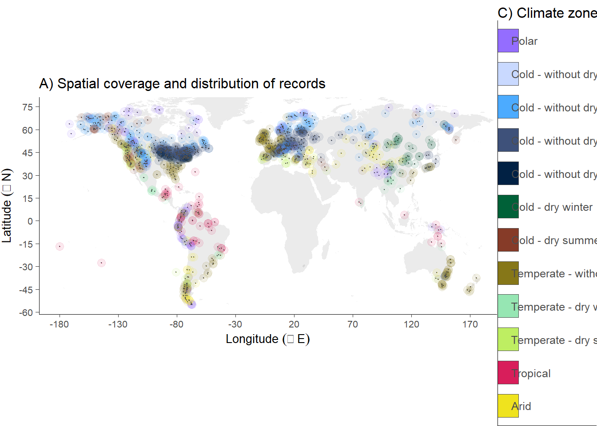
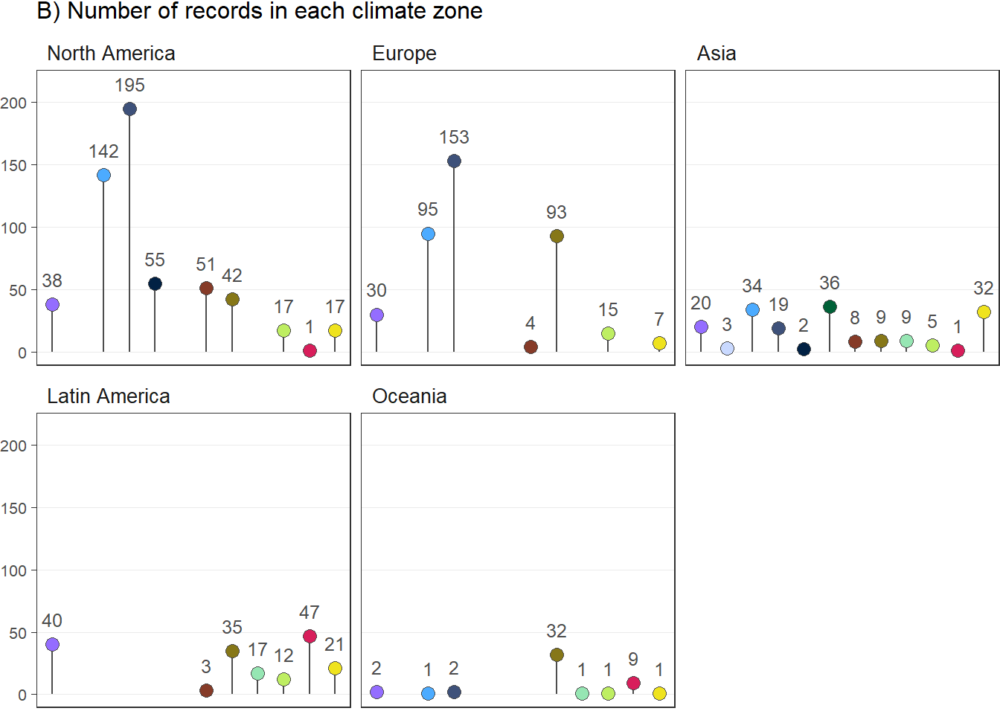
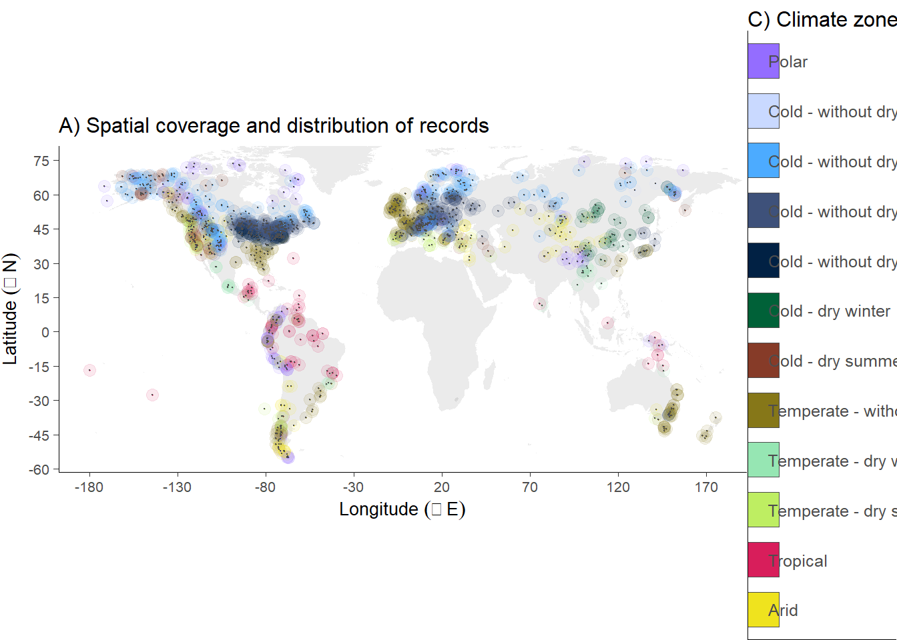
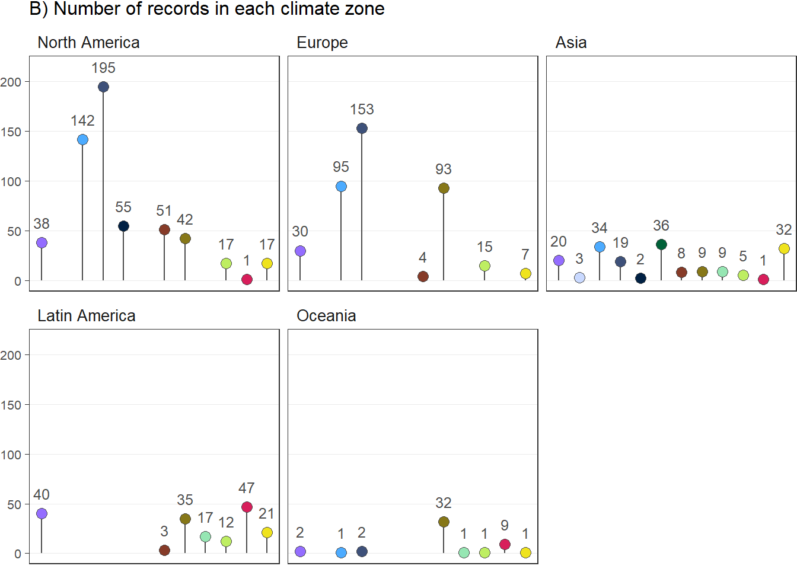
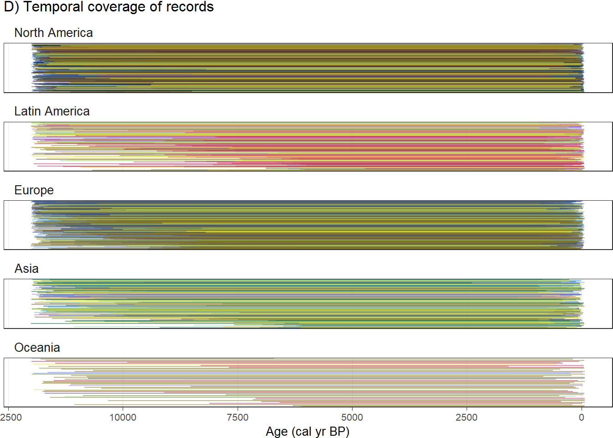
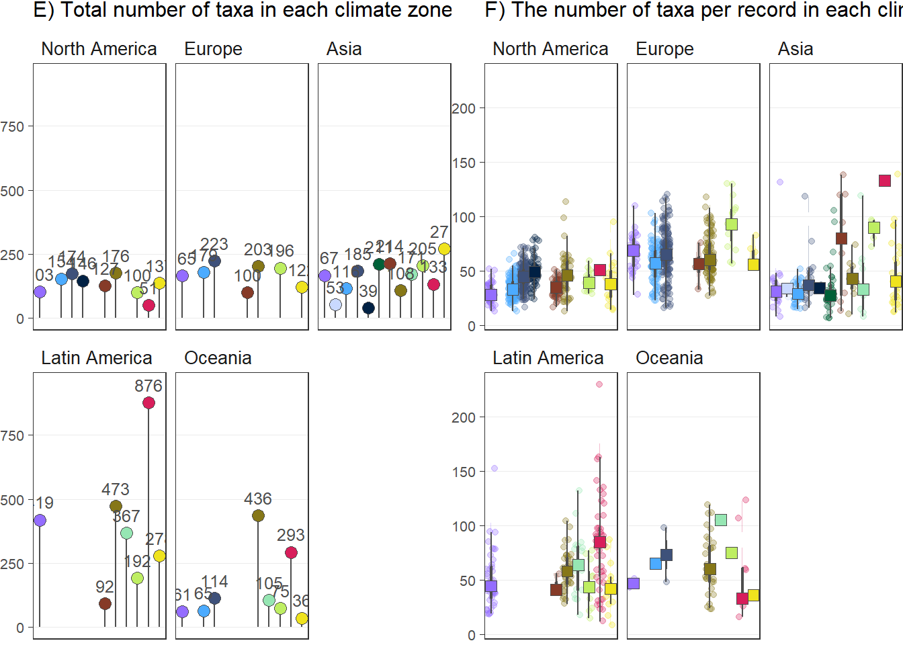
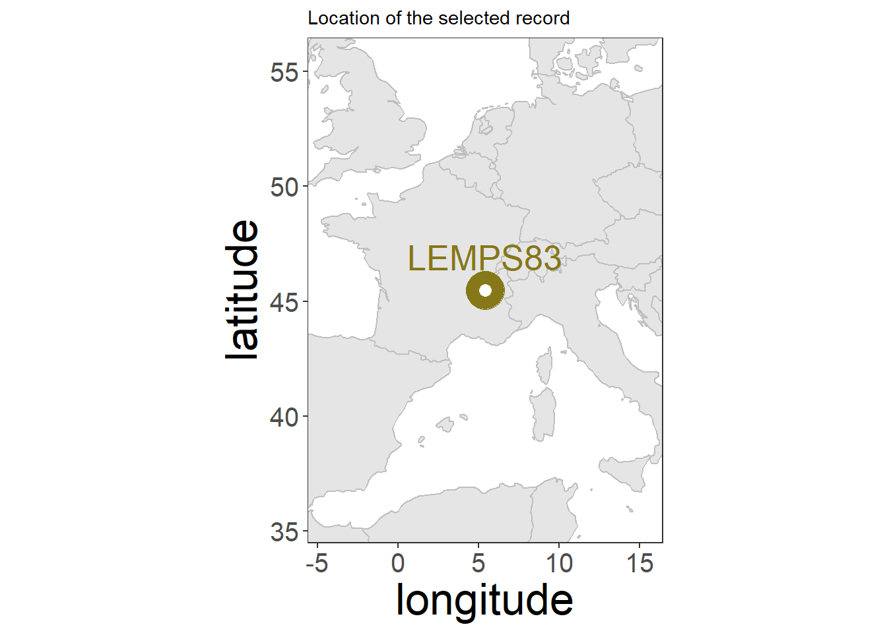

The objective of this report is to give an detailed description of individual steps of the data analysis
The compilation of a pollen dataset for our analysis is performed a priori. Raw pollen datasets are carefully selected with the R-Fossilpol package, and the guidelines to the workflow are well described in Flantua et al. 2023 and in our website Fossilpol project. Most datasets are obtained from the Neotoma Paleoecology Database. Some additional data are from private owners in areas with data gaps, which we have limited access to use. We do not have the intellectual property rights to make these data public available. Therefore, only the derivatives of the analysis can be publicly shared. Table 1 provides a summary of the settings used in the FOSSILPOL workflow to obtain a standardised project dataset. This input data are further filter during the data processing steps in HOPE to get the final collection of a standardized dataset of high data quality we can use further in our data analyses.
An important step in FOSSILPOL to obtain a standardised pollen data set within and across regions is the harmonisation of pollen types. Different analysts have different backgrounds and schools using different nomenclature, and the level of pollen taxonomic identifications and names can vary widely. To be able to make numerical comparisons of different pollen records, the level of pollen taxonomy should be similar. Consequently, pollen harmonisation tables have been produced for different regions to try to minimise biases related to this. The regional harmonisation tables created in our project are for Europe, Levant, Siberia, Southern Asia, Northern America, Latin America, and the Indo-Pacific region (Birks et al. harmonisation paper). These tables are used as input in the Fossilpol workflow above (see Fossilpol step_by_step guide).
We have applied a number of filtering criteria to obtain as high a data quality as possible so that we can compare the numerical estimates on standardised data sets. These filtering criteria are: remove potentially duplicated pollen records, sorting levels (samples) by age, remove levels (samples) lower than a threshold of total number pollen grains counted (= pollen sum), remove pollen records based on age (minimum and maximum age ranges), remove levels (samples) depending on the age of the last control point, remove samples beyond the age ranges of interest, and remove pollen records if the total number of samples (N) is too low.
This filtering is done on the chronologies, raw pollen counts, harmonised pollen counts, and the age uncertainties from the age-depth models (Bchron). The preferable number of minimum pollen grains is set to 150, but this led to a great loss of datasets in regions with less data coverage, and we therefore reduced this number to 25 with the condition that less than 50 % of the samples must have a low pollen sum. This allow us to keep more datasets, but in the cases pollen records have a low minimum pollen sum, we acknowledge that the estimates of pollen assemblage properties (PAPs) are less robust. The maximum age beyond extrapolation is set to 3000 years because ages extrapolated beyond this threshold is considered highly uncertain. Finally, pollen records with less than 5 samples are removed for further analyses.




To determine the impact of past humans on fundamental ecosystem properties, we need to develop indicators of past human presence and activity. This led to the development of a new method, where we use human event detection and indicators identified from pollen records based on expert knowledge, combined with the method for quantifying human presence based on radiocarbon dates derived from archaeological artifacts and Summed Probability Densities (SPD) (Bird et al. 2022). We believe that this solves the issue that we can use a standardised variable as indicator of past human impact, and partially avoids the difficulty of creating standardised variables to detect human disturbance events across different regions and continents. This may reduce the potential circularity of human detection events derived from the same pollen records as the estimates of ecosystem properties.
